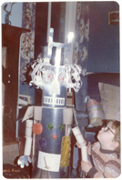

(defun hltn-co
This page describes the practice and ongoing research of Manchester-based theatre maker G.J.Hilton and company of collaborating artists.
Working at the limits of contemporary ballet, the company’s work incorporates robotics, puppetry, site-specific staging, biofeedback and custom real-time computer systems. GJH also collaborates extensively as a director, performer and scenographer.
GJH is - on several levels - one of the country’s less conventional choreographers: Not himself a trained dancer, GJH approaches choreography as principally a series of problems in emergent spatial and temporal organisation. The resulting choreography is overwhelmingly visual, highly distinctive, and seldom less than extremely demanding. While the conception is formalist, the process often algorithmic, and the performers sometimes machines, audiences report experiencing the work as immediate, viscerally emotional and deeply human.
GJH cites his formative influences as John McCarthy, Ian Curtis and George Balanchine†, and the work triangulates these three, with an emphasis on rigour of formal conception and execution, a bleak theatricality, but finally, a faith in beauty.
(† To be honest, it’s anybody’s guess how the work might be informed by GJH’s other heroes, Charlie Chaplin, Jim Henson, Marvin and Chuck D.)
 In 1981, as a nerdy child, GJH built the robot to the left. It was made of cardboard and powered by make believe.
In 1997, as a nerdy adult, GJH accidentally started a dance company. He's been trying to figure it out ever since.
The company’s work has been seen internationally, helped define the field of digital performance, and was nominated for a Paul Hamlyn Award for visual art. Collaborations with Igloo, Sue MacLennan, Darkin Ensemble and others have toured nationally and internationally to four continents, and have been performed at the Royal Opera House, Place Prize, and Monaco Palais des Festivals.
The ‘Company’ in ‘Hilton & Company’ isn’t (just) an affectation, it’s a deep acknowledgement that without the army of performers, technicians, managers, designers, builders, musicians, geeks and weirdos who’ve banded together over the years, this page would be a blank.
(* In the Lisp programming language, defun is the macro that assigns a name to a function.))
Operations
Choreography / Direction
Performance
In addition to guesting with other companies, gjh has established an occasional solo contemporary performance practice encompassing obsessive-compulsive matchstick-puppetry recreations of vintage Chaplin and Gene Kelly routines, and the epic collision of a 40-piece choir with several hundred kilos of glitter and a rock-stadium confetti cannon.
Scenography / Installation
Events
As a young company, we went everywhere, we attended every event, we taught and took every workshop. Subsequently, as an older company, we're learning to marshall our resources for the work.
A selected chronology:
2006
Digital Cultures Lab with Arthur Elsenaar, Johannes Birringer et al. NTU, Nottingham.
Choreodrome with Sue MacLennan. LCDS, London.
2005
Digilounge 1 EssexDance, Chelmsford
Digilounge 2 Dance NorthEast, Newcastle
2003
ArtSLAB with Idea Deaf & Dumb Institute, Manchester.
2002
Software for Dancers with Scott DeLaHunta, Ashley Page, Shobana Jeyasingh, Siobhan Davies, Wayne McGregor, Chris Ziegler, Ade Ward, Bruno Martelli, Sanjoy Roy Sadlers Wells, London.
1998
LiftLink with Susan Kozel Lighthouse, Brighton.
1997
Digital Dancing Riverside Studios, London.
1996
36MC - 36 hours in a mystery chair with Idea, Tosh Ryan-Carter et al. Former Blackwells bookshop, Manchester.
1996
LBLM with Johannes Birringer CIHE, Chichester.
Products
Robocoppélia
If I was feeling suicidal, I wouldn't make a ballet about it, I'd make the most beautiful variation I could for a ballerina, then afterwards I'd shoot myself.
George Balanchine
… die Geschichte mit dem Automat hatte tief in ihrer Seele Wurzel gefaßt und es schlich sich in der Tat abscheuliches Mißtrauen gegen menschliche Figuren ein. Um nun ganz überzeugt zu werden, daß man keine Holzpuppe liebe, wurde von mehrern Liebhabern verlangt, daß die Geliebte etwas taktlos singe und tanze, daß sie beim Vorlesen sticke, stricke, mit dem Möpschen spiele usw. vor allen Dingen aber, daß sie nicht bloß höre, sondern auch manchmal in der Art spreche, daß dies Sprechen wirklich ein Denken und Empfinden voraussetze. Das Liebesbündnis vieler wurde fester und dabei anmutiger, andere dagegen gingen leise auseinander.
E.T.A.Hoffmann - Der Sandman
Got myself a crying, walking, sleeping, talking living doll.
Cliff Richard